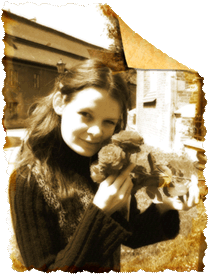

Жил был
обыкновенный человек. И жил вроде как все: учился, работал, встречался с
друзьями, читал, ходил в театр и кино,
слушал музыку... и все бежал и бежал вперед
по своей дорожке.
Только
очень уж часто останавливался и смотрел вокруг, поражаясь совершенству и
красоте окружающего его мира.
Ведь, случайно завернув за угол, можно было наткнуться на настоящее
Чудо, увидеть как затейливо обвивает виноград кованные узоры забора у
старого дома, как мягко светят абажуры ламп в кафе, создавая за каждым
столиком свой мир, порадоваться восхитительным танцам бабочек на зеленой
лужайке.
И, однажды,
пришёл человек домой, взял в руки кисточку и краски, и украсил
причудливым виноградом лампу на своём столе, поселил танцующих бабочек
на небесно-голубых занавесках в спальне,так что при каждом порыве ветра
они начинали новый танец. А на кухне, за маленьким столиком, у него
появился свой новый мир, мир тихих разговоров и неповторимых ароматов
кофе, под низким красочным абажуром.
И постепенно для него открывался удивительный,
новый мир, мир Творчества и Красоты. Он читал нужные книги, учился у
хороших учителей и поражался все новым и новым открытиям. Он любил
удивлять людей яркими и необычными подарками, участвовать в разных
творческих конкурсах, совершенствуя свои навыки и теперь решил
поделиться своим творчеством со всеми, надеясь, что кому-то оно будет
интересно, а кому-то - нужно. Кого-то будут радовать необычные вещи в
доме, кто-то захочет удивить близких людей ярким подарком, а кому-то
понадобится помощь для осуществления его рабочих планов.